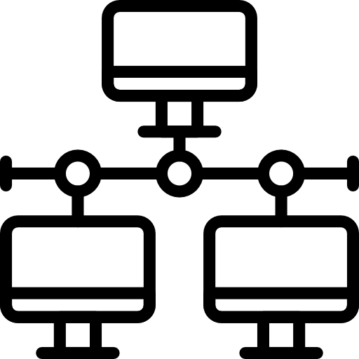

Apasionado por la tecnología y la música, siempre en búsqueda de nuevos desafíos y aprendizajes. A lo largo de los años, he adquirido experiencia en armado y mantenimiento de computadoras, instalación de software, programación y administración de redes.
Soy Técnico Universitario en Redes de Datos y Telecomunicaciones por la Universidad Nacional de Cuyo y actualmente me encuentro en la etapa final de la Tecnicatura Universitaria en Desarrollo de Software. Esta combinación me permitió desarrollar una base sólida tanto en infraestructura y redes como en desarrollo de aplicaciones.
Mi enfoque actual está orientado al desarrollo web Full Stack, con especial interés en Backend y DevOps. Trabajo principalmente con tecnologías como Node.js, Express.js, MongoDB y PostgreSQL, desarrollando APIs y aplicaciones web escalables. También he trabajado con React.js en Front-end y continúo ampliando mis conocimientos en arquitectura de software, microservicios, Docker y Kubernetes.
Disfruto diseñar soluciones eficientes, aprender nuevas tecnologías y aplicar buenas prácticas de desarrollo para crear aplicaciones mantenibles y escalables.
Mi objetivo profesional es integrarme y crecer en el sector del desarrollo de software, en Back-end y DevOps, contribuyendo con soluciones creativas y eficientes.
Herramientas aprendidas


